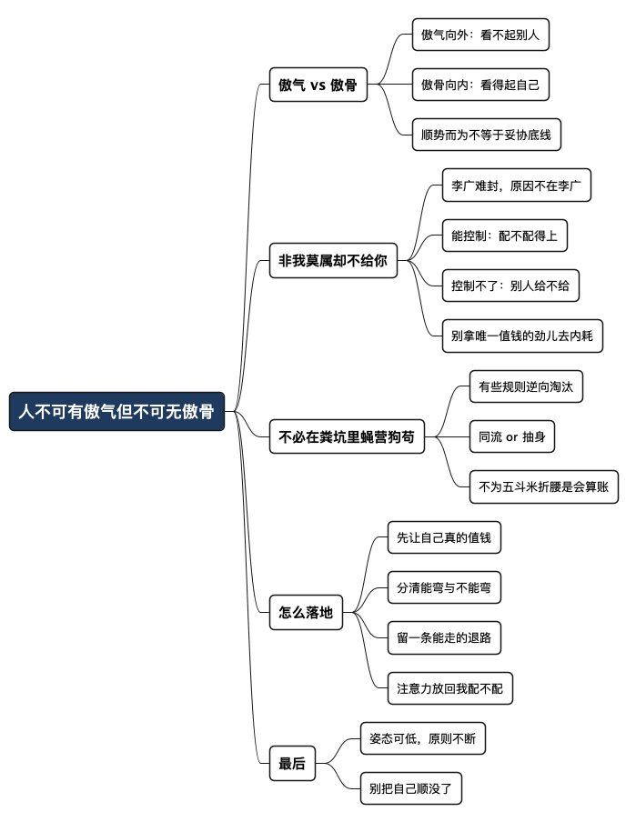

人不可有傲气，但不可无傲骨
Posted on 五 10 7月 2026 in Journal
| Abstract | 人不可有傲气，但不可无傲骨 |
|---|---|
| Authors | Walter Fan |
| Category | Journal |
| Version | v1.0 |
| Updated | 2026-07-10 |
| License | CC-BY-NC-ND 4.0 |
人不可有傲气，但不可无傲骨
有一部美剧我一直很喜欢，叫《傲骨贤妻》（The Good Wife）。女主角艾丽西亚本来是个相夫教子的家庭主妇，丈夫是州检察官，风光体面。结果丈夫爆出召妓加贪腐的丑闻进了监狱，她一夜之间从"官太太"变成一个要重新找工作的中年律师，从事务所最底层的初级律师做起。
我喜欢的不是剧情有多狗血，而是这个"傲骨"的翻译很传神。她低过头，也认过怂，为了两个孩子该忍的都忍了——但有些线她始终没越过去：不出卖当事人，不为了往上爬去踩别人，不把"体面"这两个字当成筹码去换。人可以处在很低的位置，但脊梁骨是直的。
现实里我当然没遇到这么戏剧化的场面，但类似的时刻，这些年也碰到过好几次。剧名让我想起徐悲鸿那句常被引用的话——"人不可有傲气，但不可无傲骨"（据说是他对学生的训诫）。一字之差，境界两分。今天就想借这句话，说清楚一件事——当你觉得"这事非我莫属"、别人却偏偏不给你的时候，那多半不是你的问题。
先分清楚：傲气和傲骨不是一回事
这两个字长得像，性质完全相反。
- 傲气，是向外的：看不起别人，觉得自己高人一等，本质是把自尊建立在"我比你强"上。这东西一旦被戳破，人就慌了。
- 傲骨，是向内的：看得起自己，守得住底线，本质是"哪怕没人认可，我也知道自己是谁"。它不需要跟别人比。
傲气是怕别人不知道你厉害；傲骨是就算没人知道，你也不肯把自己贱卖。
一个靠比较活着，一个靠自己活着。
我年轻的时候其实分不清，觉得有点脾气、不轻易服软就是有骨气。后来在职场里摔过几次才明白：那些当众抖机灵、不肯认自己不懂、听不进不同意见的，全是傲气，不是傲骨。真正有傲骨的人，反而常常很谦和——因为他不需要靠踩别人来确认自己。
这里插一段我自己的老底。刚工作那两年，我在一家国企当文字秘书。这活儿光有文字功底不够，更要有"眼力见"——领导进门得笑脸相迎，端茶递水察言观色，说话办事处处圆滑。我不是不会，是干着难受：每天大半精力不在把事做好上，而在琢磨怎么让领导舒服。干了一年多，我就认清自己不适合这一行，索性转了行，去当程序员——一个"代码能跑就是能跑、跑不了再圆滑也没用"的行当。那时候没想什么傲骨不傲骨，现在回头看，那就是一次典型的"换池子"：不是我跟谁赌气，是那个池子的水，养不了我这条鱼。
所以"顺势而为"和"守住气节"根本不矛盾。势该顺就顺：形势比人强，硬顶是莽夫。但顺的是"做法"，不是"底线"。方法可以妥协，原则不能拿去交易。
"非我莫属却偏不给你"，问题真不在你
王勃在《滕王阁序》里叹了一句"冯唐易老，李广难封"。李广是汉代名将，一生和匈奴打了大大小小七十余仗，战功赫赫、声名远播，连敌人都怕他，可到死都没能封侯。为什么？
李广难封的原因，恰恰不在李广。他能打，运气、时机、朝廷的分配规则却不站在他这边。这就是最典型的"配得上却没得到"。
有些东西，你要让自己配得上，让别人都觉得非你莫属时，别人偏偏不给你，那不是你的问题。
这句话听起来像是安慰，其实是一个很冷静的判断。一次晋升、一个机会、一份认可，能不能落到一个人头上，往往取决于两件事：
| 变量 | 你能不能控制 | 你该不该为它内耗 |
|---|---|---|
| 你配不配得上（能力、贡献、口碑） | 能，靠积累 | 该，这是你的功课 |
| 别人给不给（关系、时机、屁股、利益） | 基本不能 | 不该，那是别人的账本 |
一个人能做的，是把第一列做到"让明眼人都说非他莫属"。做到这一步，功课就算交完了。至于第二列——谁跟谁是一伙的、领导今年想提拔谁、蛋糕怎么分——那是别人的算盘，不是能力问题。
我见过不少踏实做事的人，在这里想不通：明明自己最合适，凭什么给了那个天天在领导面前晃悠的？于是开始怀疑自己、加倍讨好、把姿态放得越来越低。这才是最亏的——机会没拿到，还把自己唯一值钱的东西（那股不肯贱卖自己的劲儿）也一并搭了进去。
配得上却没得到，最多说明这个地方的分配规则跟自己不对付。它不是一纸判决书，它是别人的一道选择题。
世界那么大，不必在粪坑里蝇营狗苟
说得难听一点，有些地方就是个粪坑。说得体面一点：有些环境的规则，本身就是逆向淘汰的。 谁能忍、谁会来事、谁肯放弃原则，谁就上位；越是认真做事、越是有点风骨的人，越憋屈。
在这种地方，其实只有两条路：
- 同流：把傲骨磨平，学会那套玩法，慢慢也能分一杯羹。
- 抽身：承认这局跟自己气场不合，把力气挪到别处去。
我不主张动不动就"老子不干了"，冲动裸辞是另一种莽。但我更反对为了一个本就配不上自己的位置，硬生生把自己憋成另一个人。世界很大，能安身立命的地方远不止眼前这一处。一个池子的水配不上那条鱼，不代表鱼游不动，只代表该换个池子。
陶渊明宁可回家种地，也不肯为那五斗米的俸禄向乡里小吏折腰。这事被念叨了一千多年，倒不是因为他清高得不食人间烟火，而是因为他算清了一笔账：为了那点俸禄、那点脸色，去折断自己的脊梁，这买卖不划算。 折腰换来的东西，配不上折掉的那根骨头。
这不是清高，是会算账。傲骨不是一时的情绪，而是一种长期主义的理性。
一个普通人，怎么把傲骨落到实处
傲骨要是只停在"气节"两个字上，就成了空谈。我自己这些年，是靠下面这几条把它落到地面的：
-
先让自己真的值钱
骨气的底气是实力。能力平平的人谈傲骨，容易滑成玻璃心。先把手艺练硬——技术、口碑、拿得出手的作品——有了这些，才有资格挑，也才有底气不将就。 -
分清哪些能弯、哪些不能弯
列一张很短的清单：什么可以妥协（时间、做法、姿态、面子），什么绝不妥协（不撒谎、不出卖、不害人、不糟蹋自己的招牌）。清单越短越好，短了才守得住。 -
留一条随时能走的退路
底气一半来自能力，一半来自"不怕失去这份工作"。手里有点积蓄、有可迁移的本事、有别的选择，腰杆才硬。骨气很多时候是被现金流和退路撑起来的——这话虽然不浪漫，却很真实。 -
把注意力从"别人给不给"挪回"我配不配"
每次觉得委屈、觉得不公，先问一句：功课做完了没？做完了，就坦然，剩下的交给时间和别的机会；没做完，就先补功课，别急着怨环境。
一句话：
傲骨不是跟人硬刚，而是跟自己较真。
对外可以柔软，对自己那几条底线却寸步不让。
最后一句
回到开头那部剧。艾丽西亚最打动我的，从来不是她赢了多少场官司，而是她在最狼狈的时候，依然没把自己当成一件可以随便贱卖的商品。低头是姿态，脊梁是原则——姿态可以低，原则不能断。
独立的价格，不屈的气节，这些东西平时看不见摸不着，好像也换不来钱。可一旦丢了才会发现：拥有再多，都像是别人施舍的，睡不踏实。李白那句"安能摧眉折腰事权贵，使我不得开心颜"，说到底就是一句话——脊梁弯了，心里就再也开心不起来了。二十多年前我从那间办公室转身出来的时候，大概隐约就懂了这个理：让我天天摧眉折腰去换的东西，我宁可不要。
人不可有傲气，是为了不看轻别人；不可无傲骨，是为了不看轻自己。 顺势而为没错，只是别顺着顺着，把自己也顺没了。
全文思维导图
@startmindmap
<style>
mindmapDiagram {
node {
BackgroundColor #F8F9FA
RoundCorner 10
Padding 10
FontSize 13
}
:depth(0) {
BackgroundColor #1E3A5F
FontColor white
FontSize 18
FontStyle bold
}
:depth(1) {
FontSize 15
FontStyle bold
}
:depth(2) {
FontSize 13
}
}
</style>
* 人不可有傲气但不可无傲骨
** 傲气 vs 傲骨
*** 傲气向外：看不起别人
*** 傲骨向内：看得起自己
*** 顺势而为不等于妥协底线
** 非我莫属却不给你
*** 李广难封，原因不在李广
*** 能控制：配不配得上
*** 控制不了：别人给不给
*** 别拿唯一值钱的劲儿去内耗
** 不必在粪坑里蝇营狗苟
*** 有些规则逆向淘汰
*** 同流 or 抽身
*** 不为五斗米折腰是会算账
** 怎么落地
*** 先让自己真的值钱
*** 分清能弯与不能弯
*** 留一条能走的退路
*** 注意力放回我配不配
** 最后
*** 姿态可低，原则不断
*** 别把自己顺没了
@endmindmap

本作品采用知识共享署名-非商业性使用-禁止演绎 4.0 国际许可协议进行许可。 欢迎在我的个人网站 https://www.fanyamin.com 访问原文并评论。